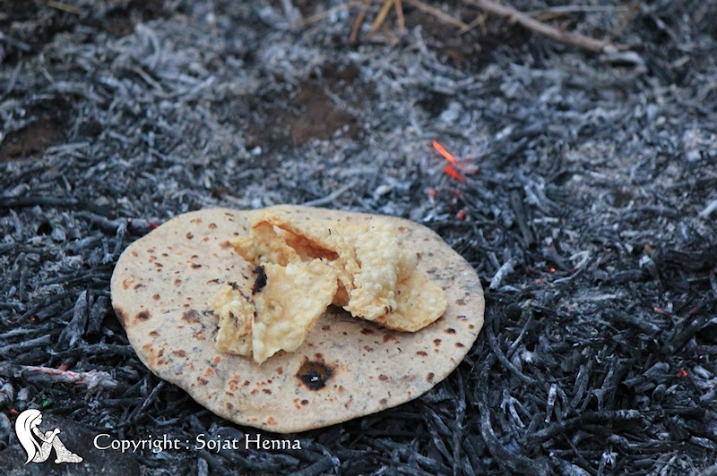

2018年10月、インドにおけるヘナの名産地ソジャットを訪問しました。
目的は、ヘナの畑をより深く知ること。乾いた高温の風を知ること。土を知ること。ヘナを育てる人をより深く知ること。ヘナを商う人をより深く知ること。こんなふうに、ヘナと、ヘナに係る人々とより深く知りあうこと、です。
朝6時前。ヘナ畑にはすでにサリーを美しく着飾った女性たちが集まっています。
ヘナ畑の一角で乾燥したヘナの枝を集めて火を起こし、暖をとりながらおしゃべりに花を咲かせています。日中は37度、38度まで気温が上がりますが、早朝は10度を少し超えるくらいで肌寒く、焚火の温かさはとても心地よいものです。
女性たちが持参した朝食はカレーとチャパティ。チャパティは大麦と水だけで作るクレープのような主食。ナンは小麦で作りますが、大麦は小麦よりもあっさりとしていておなかの負担も少なく、ほのかな大麦の甘みでおかずの味が際立ちます。食欲が少ない時でも快適に食べられるので、インドの本格的な料理に慣れない人にとってもとてもありがたい食事にもなっています。

火の熱でチャパティを温めなおして食事が終わるころ、ヘナ畑がうっすらと青紫色に染まっていきます。日の出が近づいています。
片づけが終わった女性たちは、今日の仕事が始まる手つかずの畑に歩きだします。
飲み水は素焼きの大きな壺に入れられ、頭に乗せて運んでいきます。
ヘナ畑の土は足が少し埋まるくらいやわらかく、朝露で少しだけ表面に水分があるようにも見えます。水分も感じられるように見えるのですが、足を踏みいれて表面が壊れると、見た目以上に土は軽く、中から乾いた土が顔を出します。
ソジャットには数えるほどしか雨が降りません。今年、2018年のソジャットにおける1mm以上の雨が計測された日数は、わずか21日です（11月20日現在ソジャットヘナ調べ）
その内訳ですが、降水量1mm：5日、2mm：2日、3mm：2日、4mm：2日、5mm:1日、6mm：1日、8mm：1日、9mm：1日、11mm：1日、13mm：1日、14mm：1日、68mm： 1日、70mm：1日となっています。1時間の雨量ではなく、1日の雨量です。
一方で最高気温は1年のうち、1月からの4週間程度は25〜30度の間ですが、残りはすべて30度を超えます。高温で雨が少ない乾いた土地柄です。その乾いた大地が見渡す限り、ヘナ畑。ソジャットでの時間の流れは、ヘナとともにあるのです。

女性たちはそれぞれが大きく湾曲したヘナ用の鎌と、お手製の手袋を装着しています。
分厚い布地や革で作った手袋でヘナの茎を束ね、根元から鎌でひとなぎすると、あっさりとヘナの茎は刈り取られます。驚くべきはその仕事の速さで、ひと株にかかる時間はわずか10秒程度。刈り取った茎はある程度の大きさになるまで積み重ねられていきます。
ソジャット村とその周辺の村は一帯がヘナ畑になっていて、その面積は約40km四方（ソジャットヘナ調査より）に及びます。この日も15人程度の女性たちによって、信じられないような広大なヘナ畑が1日のうちに刈り取られていきました。
作業開始から2時間ほど経つと、この日は女性たちに最初の休憩時間が訪れました。

「パコラ」という、サモサのような、具材を豆の粉で包んで揚げたものですが、この日は特別で中に巨大なグリーンチリ（とうがらし）が一本丸ごと入っています。その辛さは、インド料理の辛さに慣れていないと完食はまず無理です。女性たちはこれが大好きだそう。ソジャットが位置する中北西部の料理は辛さが命。確かに、辛さの中にしっかりとチリの風味が味わえます。さすがに良いチリが手に入る土地柄です。とはいえ、私たちは辛すぎて数口で断念しました。おしゃれで楽しいことが大好きな女性たちは休憩時間にも楽しいことを生み出し、笑顔があふれます。
刈り取られた茎は男性たちによって畑の一角に積み上げられていきます。
ここで行うのは自然乾燥。数日間放置しておくと、乾燥した葉は自ら地面に落ちていきます。ですから、後日乾いた茎・枝を持ち上げて除去すると自然と葉だけが残り集めやすい状態になっています。
男性は刈り取り作業はせず、運搬や乾燥を担当することが多いようです。
私たちは商品を意図して徹底的に引き算で作っています。
よく「オーガニックとは？」と尋ねられるのですが、私たちが認定の仕組みで納得したのは「ハラール」です。
「ハラール」はイスラム世界で絶対的な信頼のもとに成立する厳しい基準です。
それは、人のいのちにかかわる信念であり生き方の問題ですから、まがいものは存在できません。
私たちが懇意にしている農家とその周辺の農家では、はじめから農薬を使っていません。無農薬でヘナを栽培しています。その結果、ぷりっと厚みのある葉が育ちます。
『ソジャットヘナ』が日本初のハラール認証取得済ヘナであるのは、畑に関する部分でも栽培、刈り取り、乾燥と、質が違うのです。
詳細は後日、別稿に譲りますが、私たちはソジャットのヘナの中央市場で、市場の役員諸氏と濃密な会談をしました。
ご承知の通り、世の中に流通しているヘナ商品には「ヘナ100％」として販売されていても、化学染料やグアガムをはじめとする増粘剤が配合されている商品は珍しくありません。
役員諸氏もそのことは認識されていました。
「この市場にヘナを納める農家は100％、本物を納めます。そして、市場から出る時もピュアなままで出ていきます。ところが市場を出たらいろいろな問題が起こっています。市場の中はちゃんとやっています。市場を出たら、100人のバイヤーがいて、90数人はピュアではないことをしているのが現実です」と話された役員もおられます。
畑に青々と茂るヘナは、とても美しい。
そして、本物のヘナを使って心地よさと美しさを手に入れる人々も、間違いなく美しい。
美しく、心地よい。私たちが扱っているヘナの本質はまさにこれにつきます。
そして、これをそのまま表現する者こそが、私たちなのだということを強く認識しなおしました。
夕方になり、陽が沈み始めるころ、広大なヘナ畑が株だけになりました。
青々と茂っていたヘナはすべて、女性たちの手によって収穫され、山積みにされています。
仕事を終えた女性たちとエールを交換するとやはり笑顔。濃い紫の空気の中を、送迎トラックに向かって歩いていきます。
収穫できたヘナを1袋約40kg入りの麻袋に何袋もまとめ上げていき、陽が沈んだ後の最後の明りの中で、男性も女性も誇らしげです。
私たちは現場で、ヘナの葉を食べて品質をチェックすることもします。本物のヘナですから。（日本ではしないでください）
良いヘナの葉は甘みと苦みのバランスがとれていて、清涼さや生命をいただく感じがしっかりと伝わってきます。『ソジャットヘナ』になるのはまさにこうした幸せなヘナです。
ですから、使われたお客様が「ソジャットヘナは他のヘナと違う」とおっしゃるのは、栽培という始まりから、日本で使うという終わりまで、その間も含めてずっと幸せだから。
今回しっかりとソジャットに滞在することでそのことをとても強く感じました。『ソジャットヘナ』は、本当に、幸せなヘナなのです。
（ソジャットヘナが見たソジャット。その２に続く）
|